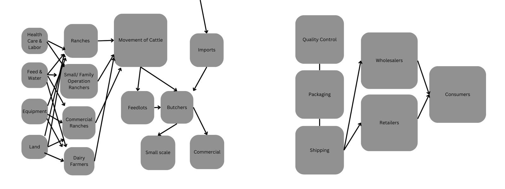
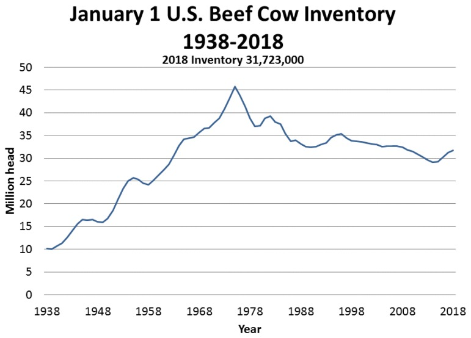
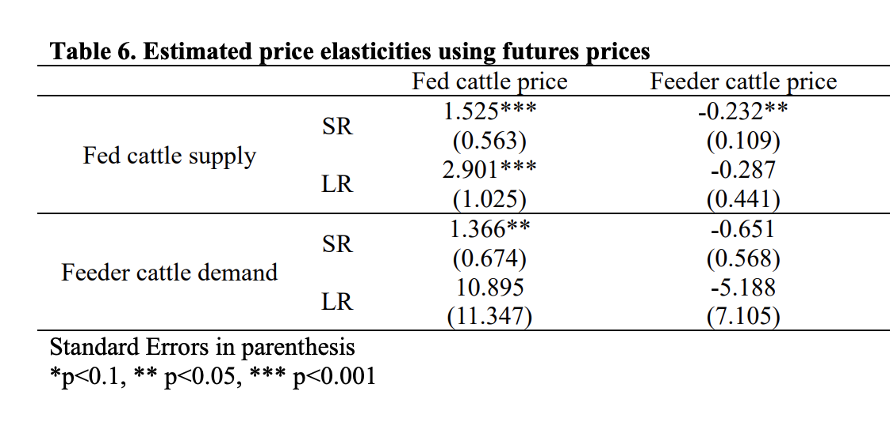
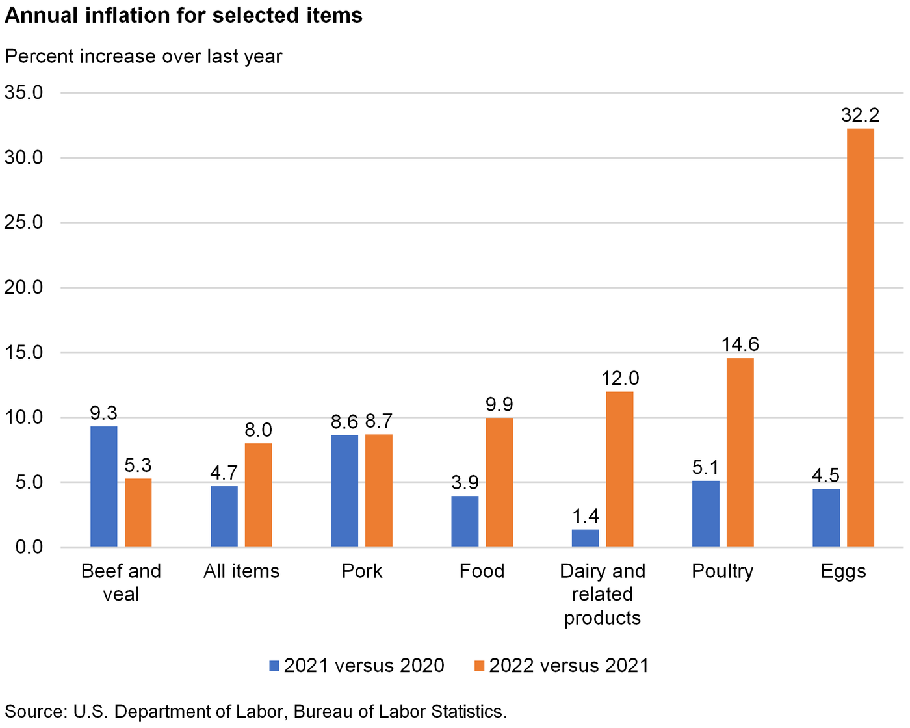
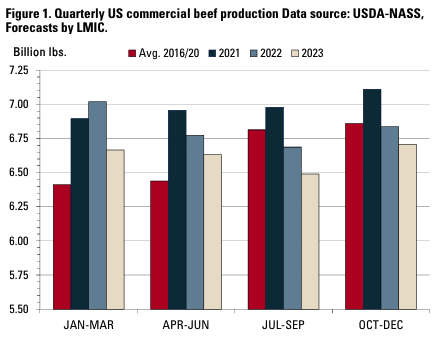
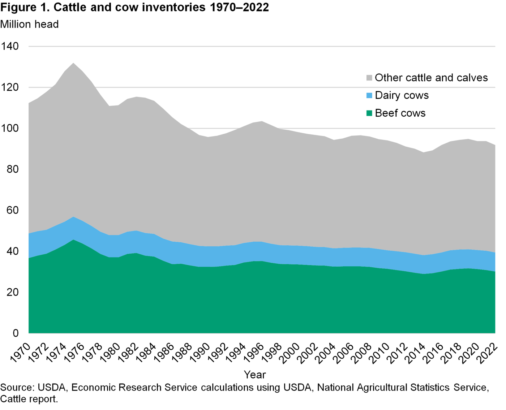
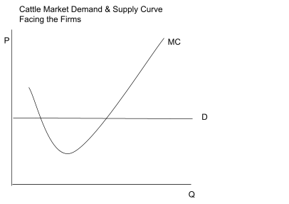
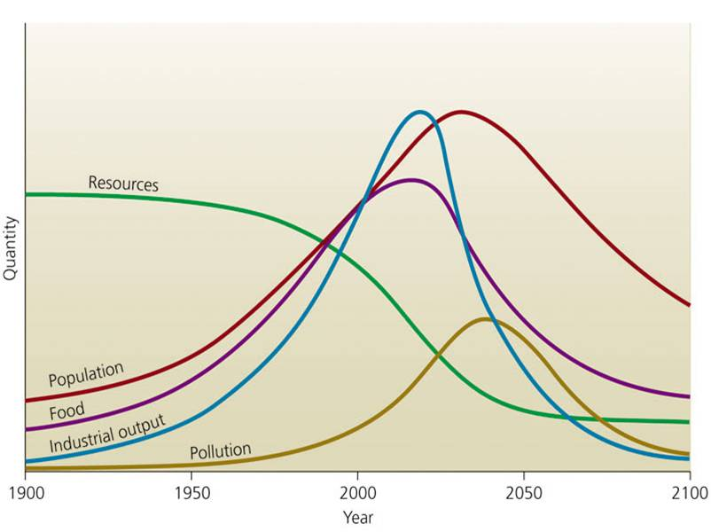
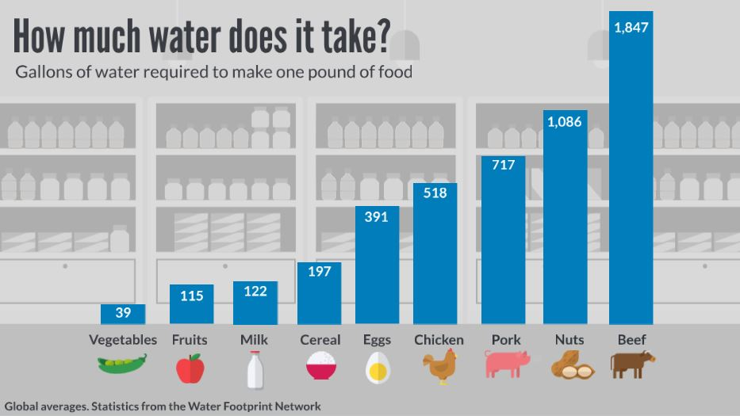

The Economics of the U.S. Cattle Industry
A group report from my first year at Texas A&M, following cattle from ranch to retail through demand, supply, macroeconomics, trade, and environmental costs.
Formatted for the web; the text is as submitted.
Abstract
Cattle are one of the most important, arguably the most important agricultural commodities in our economy. Accounting to about 20% of total cash receipts of a 450 billion dollar industry. It shows the scale at which that cattle plays a hand in our economy. Looking into every aspect and analyzing the effects of each in relation to the farm/livestock operators to the effect on the processing levels to the end consumer. There are a lot of different aspects to take into account in relation to the regions that are being analyzed and who it affects. There are also questions that come up when looking more into the topic, these include questions surrounding the price elasticities, what the production cycle looks like and etc. Another set of questions arise when looking at the environmental allocations of cattle, there is a need for regulation as it does cause some harm to the environment. This topic is one that has been researched for many years prior and the information available is crucial. This report includes all of these aspects and more, diving deeper into the agricultural commodities market and how cattle plays an important role.
Background Information

The cattle value chain, from inputs to consumers. Diagram by our group.- AG. Value: Input supply > Production Farm > Processing Levels (1,2,3) > Wholesale > Retail > Consumer
- Flows from left to right for production “route”
- Money Processing goes backwards in the cycle
Retailers: these retailers include all sellers that are distributed to consumers. Some examples of these retailers are, but not limited to: HEB, Walmart, Target, Central Market, Whole Foods and Brookshire Brothers.
Wholesale: a company that sells meat products in bulk to retail businesses. These prices are usually much lower than retailers as their margins are made from bulk sales. You are buying in larger quantities as opposed to smaller purchase orders.
Quality control: ensures conducting hazard analysis, pinpoint critical control points, and establishing critical limits, monitoring procedures, establishing corrective actions, recordkeeping and verification of established procedures.
Packaging: the business or industry of slaughtering cattle and other meat animals and processing the carcasses for sale, sometimes including the packaging of processed meat products.
Shipping: Shipping services, in this scenario, are taking the broken down meat and distributing it to the proper buyers. (retailers, wholesalers, or DTC)
Imports: Similar process described in the rest of flow diagram but referencing meat or cattle imported into the country. These imports are easily recognizable by example, meats like the Japanese Wagyu Cattle and their meat and Angus Cattle from Scotland
Butchers: This step in the value chain is relating to the actual slaughtering and break down of the cattle for each individual meat “component”
Movement of Cattle: Cattle transportation is a necessity in the flow model. When moving cattle, they aren’t supposed to stay in the trailer for more than three days. This gives cattle haulers a strict deadline they have to make and can cause cattle haulers to charger a high price than other shipping industries
Dairy: Depending on the size of the dairy farm, most dairies are a part of a CO-OP . This is when multiple dairy’s in the same area all ship to the same milk packaging plant. The plant is usually placed relatively in the center of all the dairies. The milk is then packed under one brand of milk and shipped across the country to retailers.
Form value: Cattle are probably the most complicated to transport in its original form. First being moved from a feed lot to processors while still living. This can complicate things because cattle can only be on the road for so long. Once slaughtered, the carcass will either be quartered and shipped or shipped whole. This is where they are then carried in refrigerated trucks to retailers such as HEB or walmart. Butchers at HEB for instance will take the carcass and make cuts of meat to place on the shelf.
Time Value: The approximate time it takes cattle to go from birth to the meat market is between 14 - 22 months. This is subject to change depending on the maturity of each individual cow. Speaking in generalities, this is the general rule that is followed. It depends on how quickly the cattle make the appropriate weight to go on to be sold to the meat market.
Space Value: When looking at the space value aspect in relation to the cattle. There are a few different components. To begin, there is the actual space needed to raise the calves from birth to appropriate age for slaughter and breakdown. There is the grazing component as well, the cattle need to be able to roam with enough space and resources. These resources include, but are not limited; land, water and feed. Moving on to further processes, this also similarly applies to the components. When you look at the processing levels and the distribution channel you come to see the same aspects showing. You need land and resources to perform the different activities to add value to the cattle from its birth to sale. You need space to run butcher shops, you need space to house the meat and sell it.
Demand Considerations
United States Consumption
In 2021, the United States consumed around 30 billion pounds of beef. This leads the world in total beef consumption by 6 billion pounds with the next closest country being China. The United States prides itself on being the number one country in the world for producing beef, with producing 19% of the total beef in the world. Beef has become part of the culture in the United States. From backyard barbeques with friends to your regular home cooked meals with family, beef is in just about everything.
*In relation to the graph, which shows the production of cattle in terms of inventory from 1938 - 2018. You can see that there is a general rise in beef production, Peaking in 1973.

January 1 U.S. beef cow inventory, 1938–2018.Price Points of Beef
When we talk about the consumer aspect of the cattle industry we have to talk about the different beef price points. There are multiple different levels of price. Price can be determined by the cut of meat. An example being, a filet piece of the cow is going to be much higher priced than the parts of the cow that make ground beef. Another example of different price points include the type of cow. The value of an Angus cow is at a much lower price point than your average Wagyu cow. Cattle ranchers and production workers like to have all parts of their cattle split up so they can target all price points of the market. They can target the wealthier with their luxurious ribeyes and filet mignons while also target the less wealthy with things such as ground beef. All cuts of meat are not the same and all cows are not the same.
Past and Current Consumer Demand
Over the past 40 years, the demand for beef has continued to fluctuate up and down, but the common trend we have seen is a rise in beef prices over the years.The demand for beef takes into account other factors besides price such as weather for example. Droughts can cause a shortage in supply for producers which leads to higher demand for consumers that ends up driving the price up even further. In the past 20 years, beef consumption has steadily increased reaching north of 30 million pounds a year.
During the pandemic, businesses were either closed or people were afraid to go out and it. This caused a lot of people to start cooking meals at home. The beef consumer report found that now 76% of meals are cooked at home. At the same time, we saw a rise in inflation causing an increase in the price of food. However, historically beef has seen a much lower level of inflation than other meats in the “meat for home” category. In 2022 ground beef made up for 50% of the beef market. This is because the lower price level made ground beef more affordable than other cuts of beef. Such as the sirloin steak which is about twice the price of ground beef.
Consumer Attitudes toward Beef Consumption (factors that influence consumption)
There are many different factors that influence the consumption of beef. Some of these factors are, but not limited to: “taste, nutritional benefits, and origin”. We live in a new age of information, we have so much access to information at our fingertips. With this information comes a level of selectiveness. Which beef is better for you, this can be in relation to how the cattle are raised to the fat content. How lean is the meat that you are eating, these all have an influence on if certain products of beef are consumed or not.
Elasticities

Estimated price elasticities using futures prices. Source: Jeong, AgEcon Search.- Looking at the elasticity of price with cattle, you can notice a general pattern. It shows that in the short run, the price is inelastic. (<1). When looking into the long run, you see that the price is actually elastic. (>1)
Market Demand for Beef
The market demand for beef is one that has constantly grown and expanded as customer needs have risen. Due to this relationship we see the markets’ expectations and projections web and flow each year. Such is shown in 2022 when the production had to be “lowered by 115 million pounds” then in 2023 the beef projection rose by “170 million” to a total of “26.3 billion pounds”. As the year progresses the demand changes and the projection is either reduced or increased to properly meet the market's demand at that time. The market demand over the years has generally stayed at a constant rate with every year having high projections then maintaining or lowering production.

Annual inflation for selected food items. Source: U.S. Bureau of Labor Statistics.- 2020 through 2022 shows how the market demand for beef can go back and forth as in 2021 the inflation rate of beef and veal rose by 9.3%; however, the next year it was down to 5.3%. This helps to accentuate the point that while the market’s demand generally maintains itself, it has the volatility to go up and down throughout the year.
Supply, Cost and Input Considerations
Issues with Cattle production
Past: In 2020, the cattle production was hit hard by Covid-19. There were simply not enough people for the job. The labor was down tremendously. Not enough truck drivers, packing plants were shut down and the production was put to halt. There have also been new Covid-19 restraints that have been put on packing capacity limitations.
Current: Many of the current issues we see today are still in large part due to Covid-19. The beef industry is still recovering from the lack of labor and increase in health policies. The shortage of workers in every part of the supply chain creates big issues. Beef can’t be transported as quickly, the beef can't be packaged as fast and the whole production process is simply not as efficient. When labor is short it affects every part of production.
Profit maximization: In the production of cattle marginal changes are used rather than major changes. Efforts such as putting more time and effort into saving a calf or adopting methods such as artificial insemination to try ensure higher birth rates in the herd. In regards to inputs and the maximization of usage of feed is a huge factor. Such as the lack or rain or price of fertilizer causing a shortage or price increase in hay make ranches adjust their feeding and storage of hay to try and reduce the amount amount of waste
Cost of Productions: In the cattle industry, there are three main categories when it comes to cost production, direct expenses, income expenses, and hidden costs. For example, any of the following costs could be affiliated with direct expenses: feed and hay purchased/raised, fertilizer, equipment, wages, taxes, breeding costs, medical cost, and travel costs. The following would fall under direct income expenses: cash, services, semen sales, and hay and feed sales. The hidden cost production can also be referred to as opportunity costs. These costs pertain to the time it takes you to mend a fence, the time and effort put into raising the cattle , or like inadequate feed efficiency.
Cost Curves: The figure below shows the overall commercial beef forecasts for the year split into four groups of three months. From the figure we can see that within the first three months commercial beef production for 2022 increased by 1.8% compared to the year before. Additionally, for the year as a whole is expected to see a 1.7% decrease in 2022 compared to 2021. From this we can assume that seasonality plays a part in the supply of beef as when comparing different seasons the production can raise or decline sharply.

Quarterly U.S. commercial beef production. Source: USDA-NASS, forecasts by LMIC.Market Structures
The overall cattle sector is divided into 2 different portions, according to the US department of agriculture the two different components are cattle production and cattle feeding. This is the general market structure for cattle, including the production of milk. Though it is its own component of the production it is still part of the overall structure.
Macroeconomic Considerations
Supply and Demand
Generally speaking, cattle supply throughout the years from the 1970’s - present have stayed stable. No dramatic increases or decreases, staying sideways showing no general trend. With that said, the market hasn’t been perfect, there have been years with fluctuations that have shown over or underestimations. Furthermore, this has contributed to the notion that seasonality isn’t just something that can occur but something that must be accounted for when entering this market at all times.

Cattle and cow inventories, 1970–2022. Source: USDA Economic Research Service.When you talk about market structure, you should be able to see information about competition and the nature of it. You get more information about the nature of competition, whether there are monopolistic behaviors or if there is perfect competition. Perfect competition is defined as a situation where there are numerous buyers and sellers where everyone is well informed and the components of monopolies are absent.
When taking the cattle to market they have a set market price. This is shown in the graph with the demand curve being flat.

The market demand and marginal cost curves facing a cattle firm. Diagram by our group.Fiscal policy factors for cattle
The cattle industry experiences many different types of Fiscal policy factors. Whether it is the government stepping in during a crisis like Covid-19 to help farmers and ranchers make profit or even daily market ups and downs. The government is very helpful when regulating cattle cost and tax breaks. According to the USDA, EWG’s analysis finds the USDA provided $49.6 billion in payments to support livestock operators between 1995 and 2021, including more than $11 billion in livestock disaster assistance payments. This is an outstanding amount of support that the ranchers have been blessed with. Another big thing the government gives big tax breaks is on land for ranching. If the owner of the land can provide proof of livestock residing on the land then the landowner will receive tax cuts on his/her property.
Monetary policy factors for cattle
The government does many different things to regulate the producer's cost and production needs. According to the USDA, “In 2022, cattle production is forecast to represent about 17 percent of the $462 billion in total cash receipts for agricultural commodities. This also just goes to show that the cattle industry is a big part of the total cattle industry, so the need to regulate this carefully is extremely high. Anytime you're messing with an industry that is worth hundreds of billions of dollars must be kept upright at all times. Another thing the government does is, split the production factors into two sectors, cow-calf producers and cattle feeding. This allows the government to help the cattle industry from more of a macroeconomic standpoint. They can specify what they need to do like adjust the feed pricing and materials used for calf-production. We should be very thankful for the government when it comes to helping the cattle industry. They help regulate when times are bad and still help us when times are good.
Aggregate Demand Function
As national income is a component in the aggregate demand function, you will see it coincide with how the cattle industry is doing as time goes on. It immediately can be shown that any agricultural labor production increase has to be reflected on with a rise in national income per capita. Another factor that contributes is the use of government spending to help assist in times of need, such was shown during covid when everything seemed to halt. Additionally, the markets for importation and exportation of cattle affect the aggregate demand.
Aggregate Supply Function
The aggregate supply function is the total quantity of the goods and services produced in an economy during a given time period. Manufactures use or in this case the farmers use capital goods to produce consumers food/ goods. Change in aggregate supply is subjective to the price of factors of production, technology advancements, labor productivity, taxes, subsidies, inflation rate changes, and exchange rate changes.
Macroeconomic Policy on Farm Income & Land Prices
Farm income is affected by a large majority if not all of the policies that relate to the cattle industry. The government for the most part tries to do its part by helping out with tax breaks when allowed and government funding when needed. This largely helps the farmer’s income more than anything else as the tax breaks allow them to make more money and the government aid gives them more resources to spend on helping their farm out. Land prices are affected by the fiscal policies as they are made to help ease the burden placed on farmers. This is shown through the tax breaks given to the farmers on their land; however, this is only allowed if the owner can provide proof that livestock are on the farm.
Trade Considerations
International trade
With the largest fed-cattle industry in the world, the United States is also the world's largest producer of beef, primarily high-quality, grain-fed beef for domestic and export use.
Nevertheless, the United States is a net beef importer, purchasing lower-value, grass-fed beef destined for processing. Beef exports and imports combine to provide opportunities to increase value to the U.S. industry by exporting products that have more value in foreign markets and importing products that can be sourced more economically in international markets.
Implied trade prices clearly show the U.S. receives a higher $/lb. value for exports than it pays for imports reflecting core differences in product type and the role of each transaction in adding economic value.The economic importance of beef exports and imports is substantial and growing with time. In the absence of beef trade, the entire industry would shrink significantly.
Domestic trade
The United States faces several additional trade barriers for exporting beef in the global market including high tariffs, restrictive quotas, beta-agonist and hormone residue bans, age restrictions, strict beef cut procedures, and traceability requirements. Although significant trade barriers exist, opportunities are present as beef consumption rapidly grows and creates room for global expansion of the beef industry. The United States has free trade agreements in effect with 20 countries. Some of these agreements, such as the North American Free Trade Agreement are multilateral agreements among more than one country. Trade agreements have created opportunities for U.S. beef by reducing barriers to exports.
Terms of Trade for Cattle
The terms of trade is defined as a ratio of the two prices when it comes to livestock.
Commodities such as livestock vary in price over different seasons and are also dependent on stock. The livestock prices are held stable due to the terms of trade which controls the household purchasing power. This allows the price of beef to be maintained at a constant range which in terms allows consumers like us to purchase more of the product. The terms of trade is a massive part when it comes down to the relationship between producer and consumer.
Relative Advantage in Trade
There are many different forms of relative advantage in trade for cattle. If a rancher owns more valued pasture for his cattle to graze for long periods of time then he will have an advantage to his competitors right off the bat. This is because when the cattle are eating the right nutrients, the cattle are looked at as more healthy, then turns into more of a valuable stock of cattle. Another example is the feed price. If you are a rancher consistently getting the best price for food amongst your competitors then you have the upper hand because it is allowing you to spend less on your cattle. Relative trade advantage looks like many different things especially in cattle. There are so many factors where we can do things to have the upper hand over the competition.
Resources, Environmental and Energy Consideration
The Problem
There is one overarching problem that will continue to exist for as long as one can look forward. This relates to the issue with our planet and the rate that we are growing at with our population. We only have a limited amount of space and resources but our population is growing at an ever growing rate. With a greater population, there comes an increase in how much resources we consume on the individual level.

World population versus resources model. Source: WRSC.The graph above shows their general trend of population growth, which is exponential, in comparison to the available resources. Though our food grows with the population, in relation to cattle which is more resource based. This takes into account water, land and labor which are all very crucial factors of cattle production.
Moving onto the environmental issues caused by livestock farming, specifically cattle, you see the rapid deterioration of soil and general soil erosion around the world. According to World WildLife, the environmental impacts of cattle farming go far beyond just soil erosion. There is pollution from farms which have heavy metal pollution, water pollution from the farms, pastures and slaughters. The usage of water and also the contamination of water is something that is of concern. It takes approximately 1900 gallons of water to produce a pound of beef, this takes into account the feed and the water required to grow the cattle to age. Calculating that for each pound of beef, you see the extreme strain on local water sources and also neighboring sources. Out of all different types of produce, the production of beef and raising cattle contributes to the highest amount of water consumption.

Gallons of water needed to produce one pound of food. Source: Water Footprint Network.With environmental issues, there is another aspect which almost plays hand in hand with it. The issues regarding energy policies and consumption is another to take into account. The amount of energy that is required to produce a pound of beef is almost 110,00 BTU. The standard of BTU is the British Thermal Unit. This number does not mean alot to most people but in comparison to other produce products, like pork or chicken. It is the most inefficient, with pork production coming out to 43,000 BTU per pound and 15,000 BTU to produce a pound of chicken respectively.
Regulation/ Regulatory Institutions
The main and most well known manner of regulation of the industry is through USDA. The USDA “administers policy and publishes regulation for livestock and livestock related issues”. Though there are other institutions like the United States Environmental Protection Agency which take into account more factors in relation to the environment as that is their main concern, the USDA is the most widely used and overarching regulatory hand for the industry of cattle production. Another institution that produced regulation is the National Pollutant Discharge Elimination System. On top of these institutions, you can see different laws in place at the state level and also the federal level. These vary from state to state, and from country to country, but overall each jurisdiction does have some sort of regulation in place to help, structure and facilitate the cattle industry. This can be anything from disaster protection for the cattle farmers to anti money laundering measures on a global scale. There are a lot of factors in the cattle production process, and each and every step is regulated in some sort of way. This could be anything from laws that prohibit and limit the way that cattle are raised or butchered to regulation institutions that send examiners to test and grade a certain process. These factors include, but are not limited to: the land that cattle are raised on and graze on, the feed that they eat, waste from cattle and respective by-products, how the waste is processed and all the way down to how the cow is butchered. Some aspects of the production process are very generally regulated, like the land that the cattle are grazed on, these include laws for how much space is needed for each cow and how they are treated. There are also very specific regulations for cattle, like the butchering process. This step is crucial as this leads to ingestion by the mass population, and bad products can lead to severe health issues and can even cause great bodily harm or even death in uncommon cases. So regulation is very tight as it relates to the health of the general public.
Water and Land Issues
There is a limited amount of potable water in the US, even the world. The lack of water is a serious issue that affects a great magnitude of people. According to the Guardian, over the past century, based on all the consumption of water in the US, cattle production accounted for 23% of total water consumption. Almost a quarter of the water that we use in the United States, is used on producing cattle. Furthermore, agriculture in general accounts for 92% of water consumption globally. Not only is there a problem with water, there is a lack of land. We only have a limited amount of land available for the world. With a rapidly growing population, we require more and more land for the population to use. So with cattle farming requiring a lot of land for production of dairy related products and beef you can see an issue rising. Cattle require a certain amount of grazing land per cow and a certain amount of water legally so at a certain point we will run out of room.
References
- “World Beef Consumption: Ranking of countries (USDA).” Beef2Live. beef2live.com (Accessed May 5, 2023).
- Anon. 2023. “Cattle News, information and expertise.” Beef Magazine. beefmagazine.com (Accessed May 5, 2023).
- Anon. 2023. “USDA livestock subsidies near $50 billion, EWG analysis finds.” Environmental Working Group. ewg.org (Accessed May 5, 2023).
- Anon. “About.” The College of Information Sciences and Technology. ist.psu.edu (Accessed May 5, 2023).
- Anon. Academic.oup.com. academic.oup.com (Accessed May 5, 2023).
- Anon. “Detailing the supply curve for Beef: Ag Decision Maker.” Iowa State University Extension and Outreach. extension.iastate.edu (Accessed May 5, 2023).
- Anon. “EM Emergency Erge Food Security NCY Assessment Handbook.” documents.wfp.org (Accessed May 5, 2023).
- Anon. “It's what's for dinner.” Beef. beefitswhatsfordinner.com (Accessed May 5, 2023).
- Anon. “Market outlook.” USDA ERS - Market Outlook. ers.usda.gov (Accessed May 5, 2023).
- Anon. “World population VS. resources model: Simcenter.” Landing Page. wrsc.org (Accessed May 5, 2023).
- Drouillard, J.S. 2018. “Current situation and future trends for beef production in the United States of America - A Review.” Asian-Australasian journal of animal sciences. ncbi.nlm.nih.gov (Accessed May 5, 2023).
- Jeong, S. 1970. “The change in price elasticities in the U.S. beef cattle industry and the impact of futures prices in estimating the price elasticities.” AgEcon Search. ageconsearch.umn.edu (Accessed May 5, 2023).
- Lubben, B.D. 2023. “Opportunities, challenges for beef industry.” Farm Progress. farmprogress.com (Accessed May 5, 2023).
- Pendell, D. 2022. “Feed costs: Your comparative advantage?” Ag Proud RSS. agproud.com (Accessed May 5, 2023).
- Shahbandeh, M. 2023. “Beef consumption U.S. 2002-2021.” Statista. statista.com (Accessed May 5, 2023).
- Anon. 2020. “US rivers and lakes are shrinking for a surprising reason: Cows.” The Guardian. theguardian.com (Accessed May 5, 2023).
- Anon. 2023. “American food production requires more energy than you'd think.” SaveOnEnergy.com. saveonenergy.com (Accessed May 5, 2023).
- Anon. “Animal Policy & Regulatory issues.” USDA ERS - Animal Policy & Regulatory Issues. ers.usda.gov (Accessed May 5, 2023).
- Anon. “Beef.” WWF. worldwildlife.org (Accessed May 5, 2023).
- Anon. EPA. epa.gov (Accessed May 5, 2023).
- February 14, 2019 | B.K.D. “What's the beef with water?” Denver Water. denverwater.org (Accessed May 5, 2023).